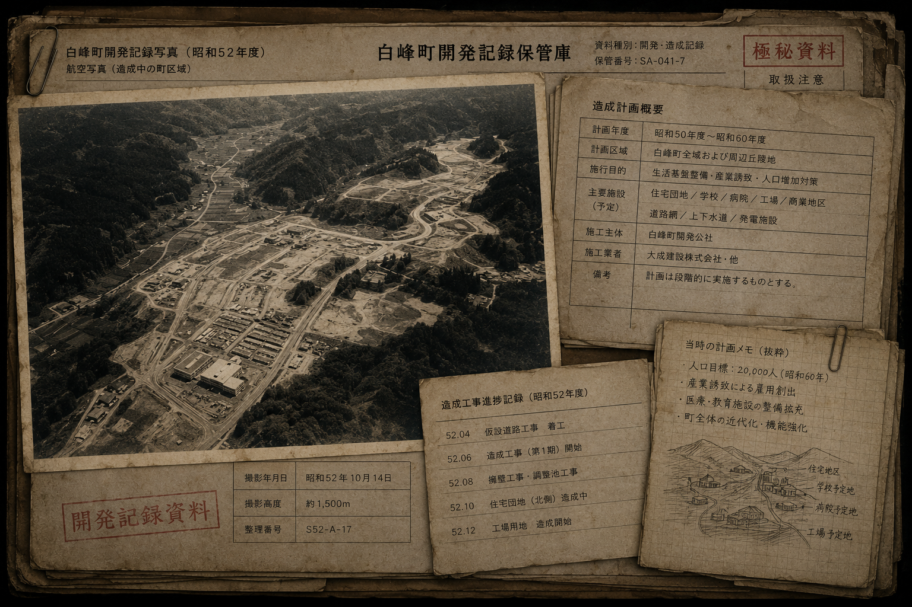

対象者選定
歯科診療からサンプルを取得し、組織修復反応を測定。
01 / CONFIDENTIAL
INTERNAL ARCHIVE ／ DOCUMENT STATUS: CLASSIFIED
02 / BIOLOGICAL SCREENING

一部の人間には、通常より高い「組織修復反応」が存在する。この特徴は身体へ明確に現れる以前から、歯の内部組織に特徴的な反応として現れる。
白峰デンタルクリニックは、乳歯・智歯・治療抜歯を通常診療の中で取得し、対象候補を早期選別する地域拠点だった。「保存対象」とは歯ではなく、その歯を持つ人物を示していた。
03 / LONG-TERM OBSERVATION
選別後の対象者について、居住・教育・就労・医療・歯科診療・町内生活を長期間記録。歯科の記録は町内の各施設と接続されていた。
観察していたのはSH-052個人ではなく、環境の変化と身体反応の関係だった。
対象者生活行動記録
 白峰住宅エリア白峰小学校白峰中学校白峰中央医院白峰工業白峰デンタルクリニック
白峰住宅エリア白峰小学校白峰中学校白峰中央医院白峰工業白峰デンタルクリニックARCHIVE / EARLIEST RECORD
04 / CONTROL POPULATION
対象者固有の反応と生活環境による影響を比較するため、一般住民も「比較対象群」として記録された。町全体を覆った点は、特殊対象者だけでなく、普通に暮らすすべての人々が観察の一部だったことを示す。
05 / SETTLEMENT RECORD

1978年以降、全国各地から「特殊反応を持つ可能性が高い対象候補」を白峰町へ誘導した。長期観察を成立させるため、住宅・学校・医療・就労先・生活インフラを段階的に整備した。
特殊な人が白峰に多かったから研究したのではない。
研究対象となる人間を観察するため、白峰へ人を集めていた。
06 / SHIRAMINE PROJECT
歯科診療からサンプルを取得し、組織修復反応を測定。
対象者を誘導し、住宅・教育・医療・就労環境を整備。
対象者と比較対象住民の生活・医療・環境を記録。
長期生活による身体反応と環境適応の変化を評価。
白峰町で構築した観察モデルを別地域へ展開。
特殊な人間を長期観察するため、人を集め、生活させ、追跡できる環境として白峰町そのものが作られた。
07 / WHY IT REMAINS HIDDEN
第IV期の研究は現在も継続している。対象者が自分を研究対象だと知らず、普通に生活すること自体が研究条件である。
公表されればこれらが明らかになり、対象者が研究を認識することで観察条件そのものが崩壊する。そのため計画は秘匿され続けている。
08 / PROJECT STATUS